9 job(s) · 13 item(s) · Baker Production QC
Assistant in frame during kitchen flash shot
In the kitchen flash frame (DSC06682) a person is standing at the window/sink; the editor removed them, but everyone should be out of shot when the flash fires so the flash frame is usable as-is.
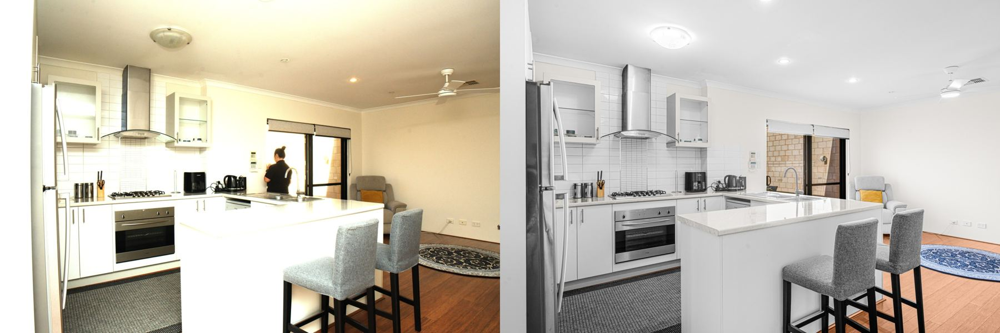
Bathroom flash a little dark
The main bathroom flash frame (DSC06637) peaks about 1.6 stops below clipping, right at the 1.7-stop 'too dark' line; bounce a bit more power in small bathrooms.
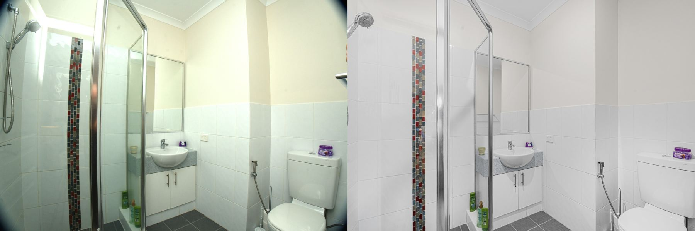
Kitchen and living flash about 2.3 stops too dark
The kitchen (DSC05822) and living (DSC05848) flash frames peak 2.2-2.3 stops below clipping, past the 1.7-stop limit, so they are of little use as true-colour references; the assistant is also standing in the living flash frame. Raise flash power/bounce for big open rooms and clear the frame before firing.
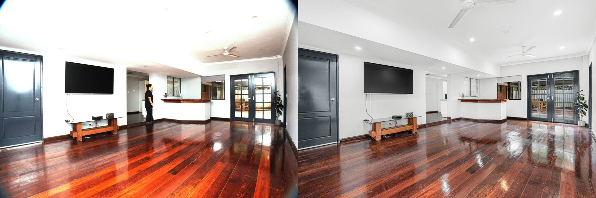
Most rooms have no flash frame
Only 3 of the 8 key rooms checked had a flash frame in the bracket; add one per interior group.
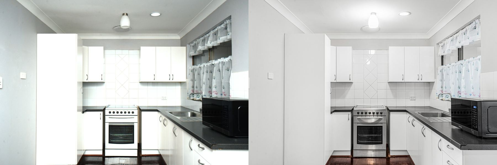
Flash underpowered, about 2-2.7 stops under in most rooms
3 of the 4 flash frames are 1.7+ stops under clipping on raw data: living DSC06483 2.7, kitchen DSC06494 2.0, bedroom DSC06522 2.4 (laundry DSC06511 1.5 is OK). Three rooms (06484, 06495, 06512) have no flash frame at all. The occupant was also standing in the living-room flash frame. Raise flash power about 1.5-2 stops, fire a flash frame in every room, and clear people from the frame.
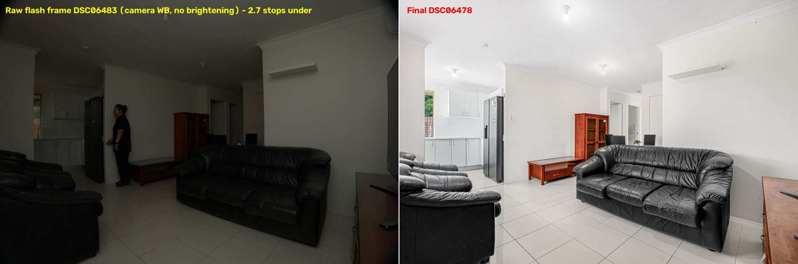
No flash fired in any checked room
Every interior group checked (bedroom 09970, bathroom 09982, bedroom 00018, bathroom 00035, kitchen 00097, living 00124) is ambient-only. The last frame of each group is a -2EV exposure with EXIF 'Flash did not fire', so the editor had no clean flash colour reference, and the rooms are lit by warm tungsten downlights. Check the flash is mounted, switched on and set to fire on the last bracket frame.
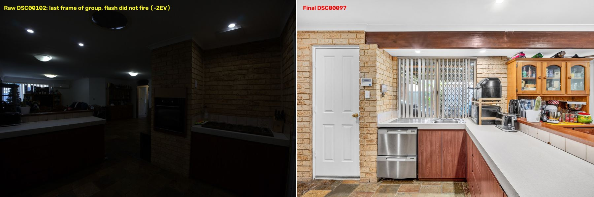
Patio shot twice from the same angle
DSC00148 and DSC00153 are near-identical frames of the alfresco/gym area with only a small shift. One of them should be dropped, or the second should be a genuinely different angle.
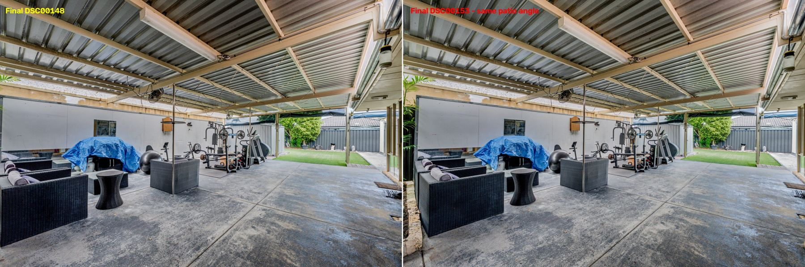
Flash underpowered, about 2-3 stops under
All five flash frames checked are 1.9-2.9 stops below clipping on raw data (DSC06799 2.9, 06821 2.7, 06832 2.6, 06843 2.8, 06854 1.9), so the flash adds little clean light and the rooms rely on tungsten ambient. Raise flash power about 2 stops. Same shooter and same pattern as Villa 1/10 Dolan Way today.
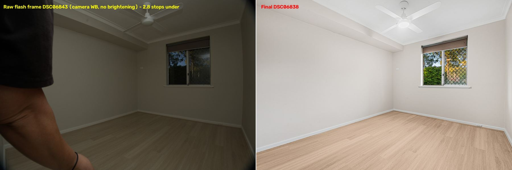
Flash about 2.5-3 stops under, should be ~1
Every flash frame checked (1/160 s, ISO 400) is well under-exposed in the raw data. 99th-percentile whites sit 2.4-3.1 stops below clipping in the kitchen, dining, master, ensuite, laundry and bathroom; only the living room (DSC00313) is near target at 1.75. The editor has to lift the flash a long way, which adds noise and greys the whites. Raise flash power or ISO so the flash frame's whites land about 1 stop below clipping.
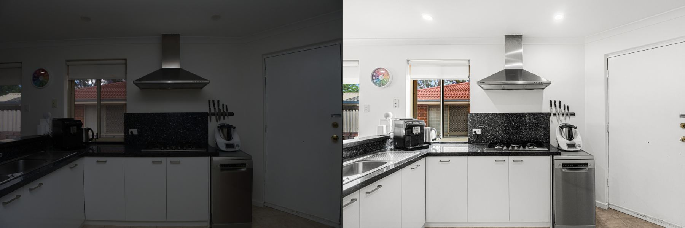
Flash about 3-4 stops under, should be ~1
Every flash frame checked (1/160 s, ISO 400) is badly under-exposed in raw data. 99th-percentile whites sit 2.8-3.9 stops below clipping (master bedroom DSC00843 3.9, dining 3.4-3.6, kitchen 3.1, bedrooms 2.8-3.4). The editor has to push the flash 2-3 stops. Raise flash power so the flash frame's whites land ~1 stop below clipping. The flash-frame WB preset also renders very blue.
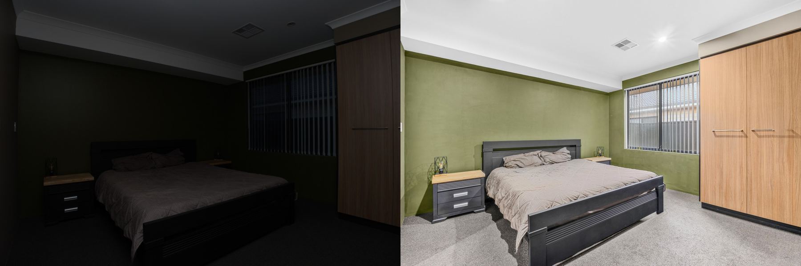
Flash about 2.5-2.8 stops under, should be ~1
Flash frames (1/160 s, ISO 400) are under-exposed in raw data. 99th-percentile whites sit 2.4-2.8 stops below clipping in the bedrooms, bathroom, living and kitchen; only the family room (DSC00550) is near target at 1.7. The editor has to lift the flash a long way, which encourages the heavy clarity seen on the floors. Raise flash power so whites land ~1 stop below clipping. Several rooms were also shot cluttered (bedroom 3 with a mattress against the wall, a study full of boxes); that is a prep note, not an editor fault.
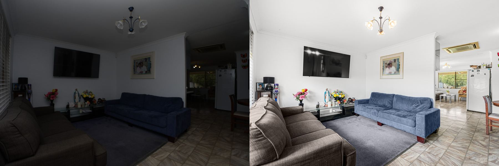
No flash frame in kitchen and living groups
The kitchen, dining and living groups (DSC09888, 09893, 09898, 09903, 09938, 09943, 09948) are 5-frame ambient brackets with no flash frame, so the editor has no clean true-colour reference in the main rooms; ambient is a mix of warm downlights and daylight. Add a flash frame to every interior group.
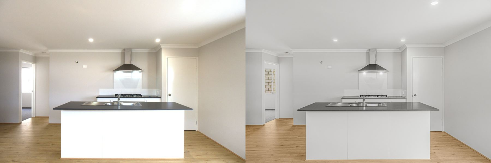
Photographer visible in bedroom mirror on flash frame
In the bedroom 2 flash frame (DSC09858) the photographer and tripod are fully reflected in the mirrored robe; the editor cleaned it, but stand out of the mirror line when firing the flash. Flash WB also renders cool/blue.
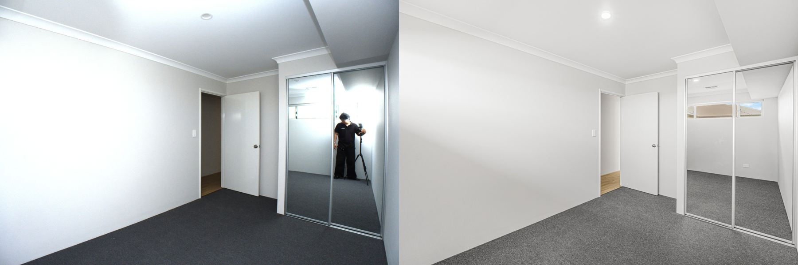